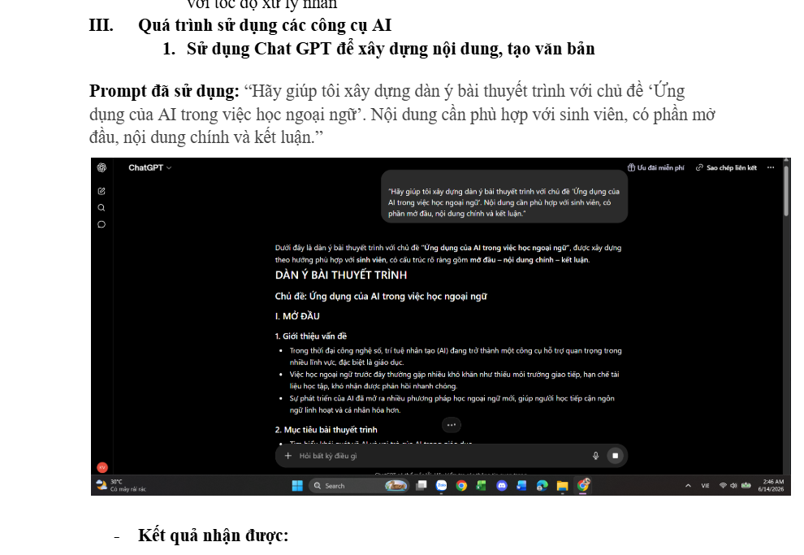
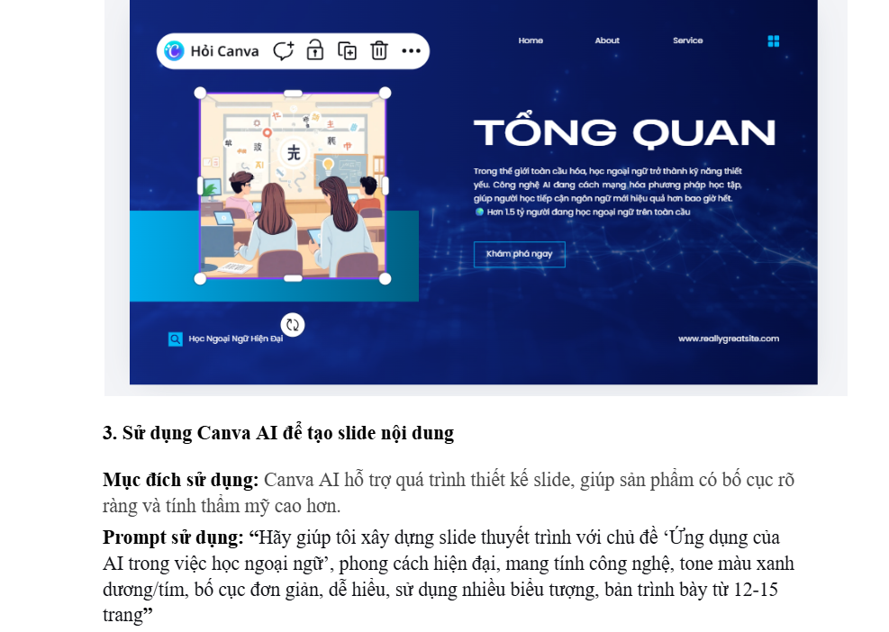

Ứng dụng các công cụ AI tạo sinh để hỗ trợ quá trình sáng tạo nội dung số.
Đây là bài tập mình cảm thấy hào hứng nhất, vì được thỏa sức sáng tạo với sự hỗ trợ của công nghệ. Mình đã kết hợp nhiều công cụ AI khác nhau, từ việc lên dàn ý nội dung, tạo hình ảnh minh họa cho tới thiết kế slide hoàn chỉnh.
Quá trình này không đơn thuần là 'nhờ AI làm hộ', mà là một quá trình mình liên tục điều chỉnh, lựa chọn và tinh chỉnh sản phẩm đầu ra sao cho phù hợp với thông điệp mình muốn truyền tải.
Kết quả cuối cùng là một sản phẩm trực quan, dễ tiếp cận hơn rất nhiều so với việc trình bày nội dung dưới dạng văn bản thuần túy.

